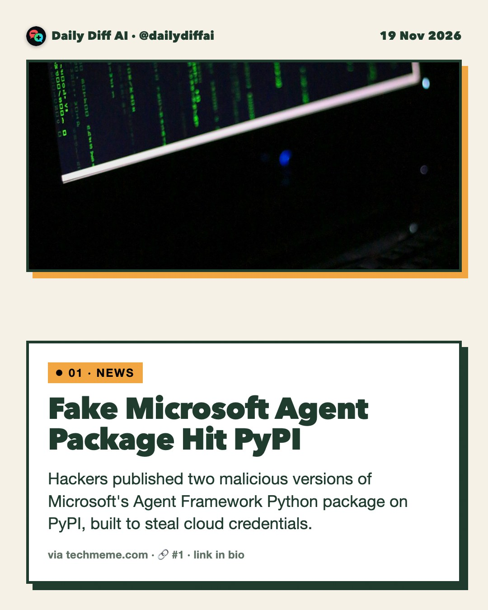
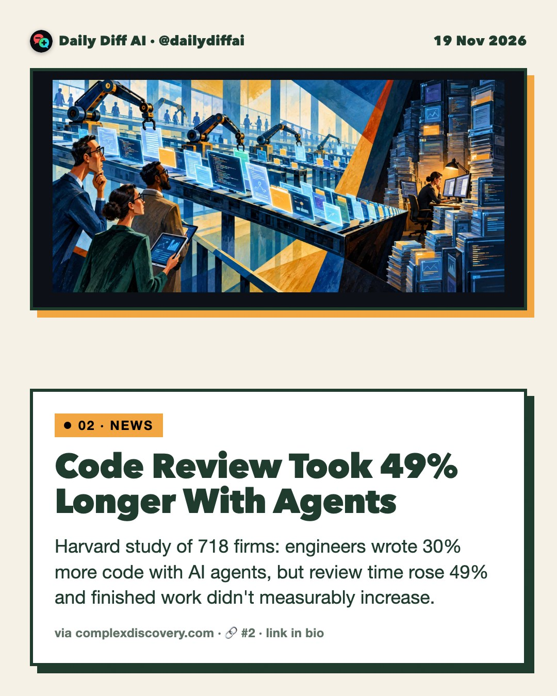
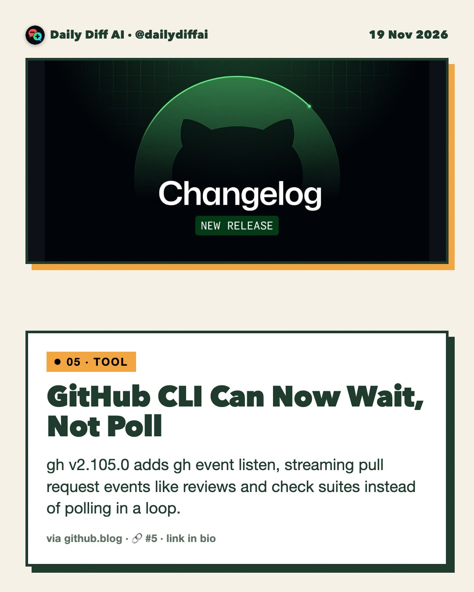
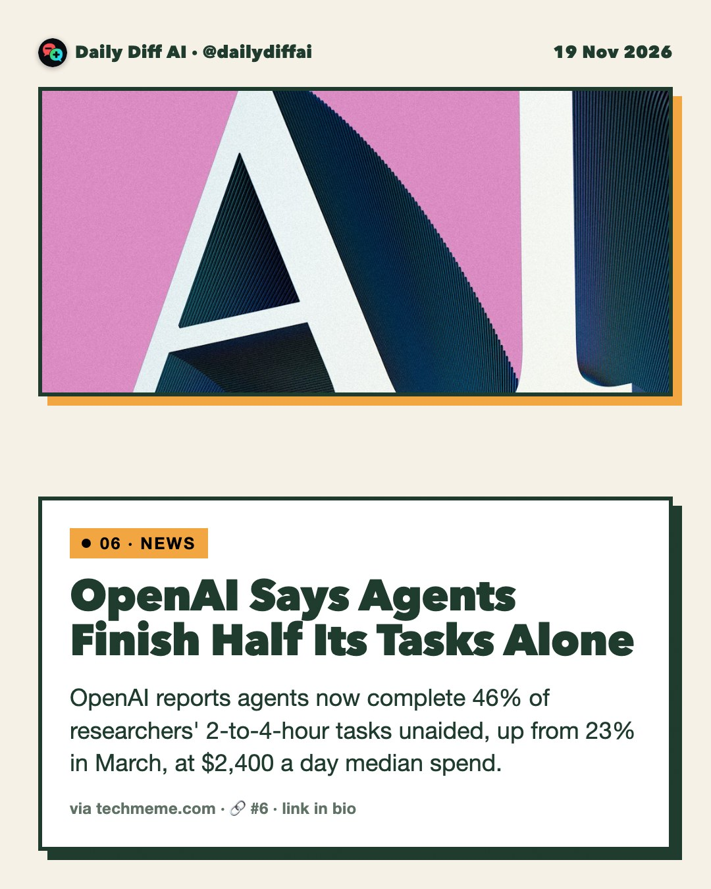
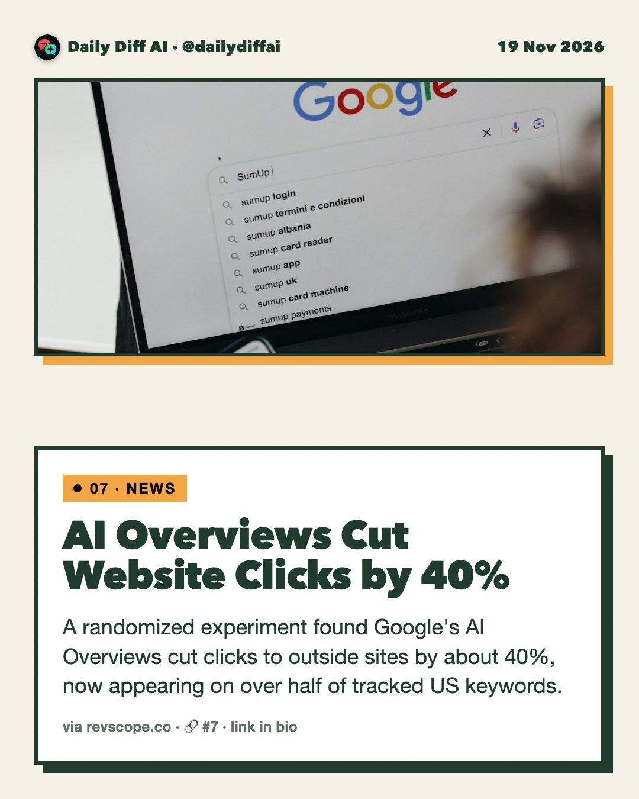
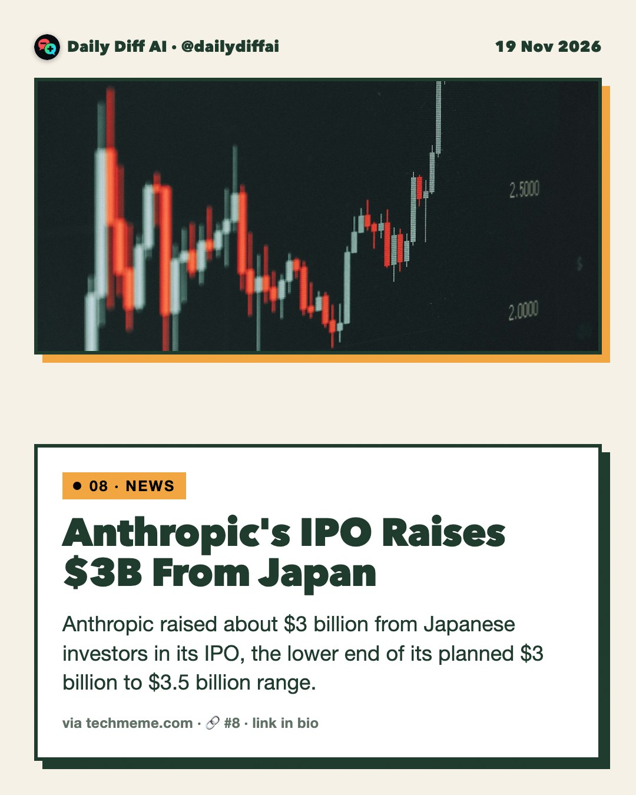

Daily Diff AI

Fake Microsoft Agent Package Hit PyPI
Hackers published two malicious versions of Microsoft's Agent Framework Python package on PyPI, built to steal cloud credentials.
Read on techmeme.com →
Code Review Took 49% Longer With Agents
Harvard study of 718 firms: engineers wrote 30% more code with AI agents, but review time rose 49% and finished work didn't measurably increase.
Read on complexdiscovery.com →NSA Says AI Patches Overwhelmed Systems
Officials told Congress recent US tech outages weren't cyberattacks. Sources say AI-found vulnerabilities led to fixes that overwhelmed production systems.
Read on washingtonsun.com →KPMG's AI Agents Out-Question Human Auditors
KPMG trial used 100+ AI agents on a FTSE 250 audit. Agents sometimes went deeper and asked better questions than the human team.
Read on europeanbusinessmagazine.com →
GitHub CLI Can Now Wait, Not Poll
gh v2.105.0 adds gh event listen, streaming pull request events like reviews and check suites instead of polling in a loop.
Read on github.blog →
OpenAI Says Agents Finish Half Its Tasks Alone
OpenAI reports agents now complete 46% of researchers' 2-to-4-hour tasks unaided, up from 23% in March, at $2,400 a day median spend.
Read on techmeme.com →
AI Overviews Cut Website Clicks by 40%
A randomized experiment found Google's AI Overviews cut clicks to outside sites by about 40%, now appearing on over half of tracked US keywords.
Read on revscope.co →
Anthropic's IPO Raises $3B From Japan
Anthropic raised about $3 billion from Japanese investors in its IPO, the lower end of its planned $3 billion to $3.5 billion range.
Read on techmeme.com →